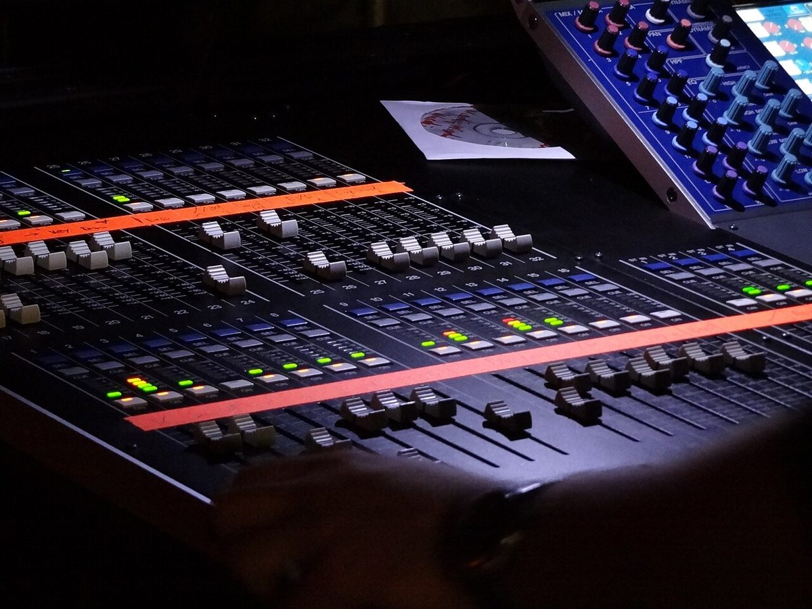
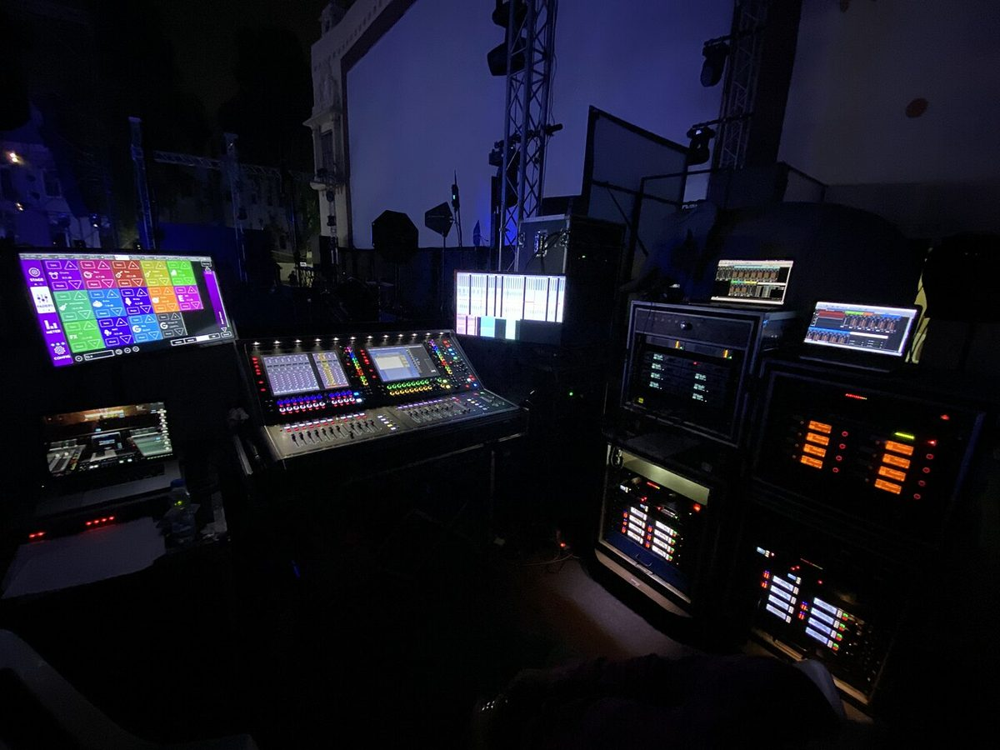

8. Qu-7 Studio: Digital Console & Music Lab
Selected-Channel EQ/Comp · Sends on Faders · Scenes & Export1 · What the Allen & Heath Qu-7 Is
The Qu-7 is a 96 kHz digital live mixer. Microphones plug into combi XLR/jack inputs on the desk or a digital stage box, the preamps save digitally with every scene, and everything after conversion (HPF, Gate, PEQ, Compressor, Sends, DCA) runs inside the DSP engine. It uses a “walk up and mix” workflow: press SEL on a channel strip, then shape that one channel on the top surface.
2 · A Tour of the Surface
Select any region on the console diagram to inspect its role in the workflow.
3 · Follow One Channel
Every input passes through these fixed digital DSP stages top-to-bottom:
Cross-links: Analog Mixer Lab · EQ Workbench · Compression Lab.
4 · Lab: Set Preamp Gain with PAFL
Too little gain leaves hiss; converter clipping above −0.5 dBFS flat-tops permanently before the fader. Press Hear PAFL Preamp to audition real headroom & converter distortion.
5 · Lab: +48V Phantom Power Safety
Condenser mics and active DI boxes require +48V down the XLR line. Dynamic mics ignore it, whereas vintage passive ribbons and unbalanced consumer adapters are at risk.
Always mute the channel before toggling +48V or plugging/unplugging XLRs so speakers and headphones don’t receive a full-scale pop.
6 · Lab: Sends on Faders (Monitor Mix)
Scenario: The singer asks for “more Guitar in my wedge” without changing what the audience hears in Main LR. Switch faders to Mix 1 Sends, keep Pre-fader engaged, and audition both buses live.
Drag vertical faders · Arrow keys adjust · Double-click snaps to 0 dB unity
7 · Lab: Scenes, Safes & DCAs
Protect the host’s mic with Safe before recalling a new scene, and scale Guitar + Keys together with DCA 1 or Mute DCA 1.
Check Yourself & Show-Day Checklist
Show-day build order
8 · Getting Audio In & Out (I/O & Multitrack)
| Port | Function | Reach for it when… |
|---|---|---|
| USB-A (front) | Records stereo mix & plays back WAV/show files. | Capturing a clean reference mix of the show or walk-in music. |
| USB-C | 32×32 multichannel computer audio interface. | Tracking every stem to a DAW or running virtual soundcheck. |
| SD Card | Standalone multitrack recorder (up to 32 ch at 48 kHz). | Capturing every band channel with zero laptop required. |
| SLink / Dante | Cat5e/Cat6 networked digital stage-box snake. | Running 32+ channels cleanly across a gym or auditorium stage. |
9 · Digital Console & Stage-Box Hardware in the Field
Click any photograph to enlarge it. Digital desks condense rows of knobs into one Selected-Channel panel, motorized fader banks, and networked stage boxes.


